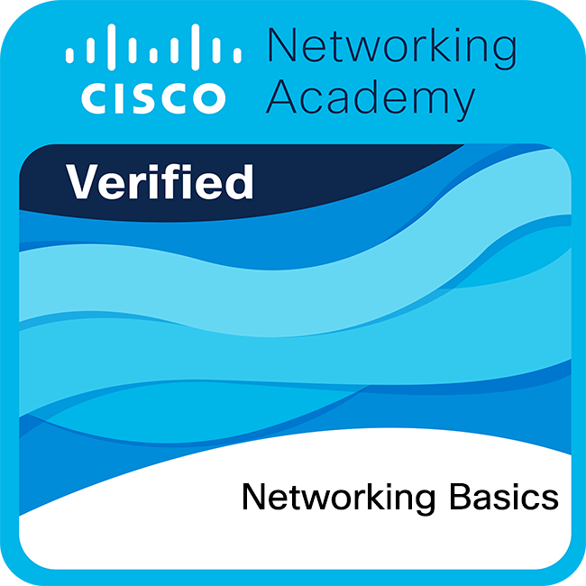
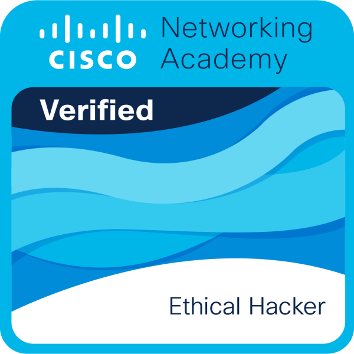

Certificaciones Profesionales
Formación acreditada en ciberseguridad, redes y análisis de amenazas a través de la plataforma Cisco NetAcad, respaldada por uno de los líderes mundiales en tecnología de redes y seguridad informática.
Cada certificación incluye una reseña del contenido aprendido, así como la evidencia oficial en PDF y el badge digital emitido por Cisco NetAcad. Los archivos de evidencia y badges se irán agregando conforme estén disponibles.
Introducción a la Ciberseguridad
Cisco NetAcadEste curso ofrece una visión panorámica del mundo de la ciberseguridad, explorando el panorama actual de amenazas digitales y la importancia de proteger la información en un entorno cada vez más conectado...
Este curso ofrece una visión panorámica del mundo de la ciberseguridad, explorando el panorama actual de amenazas digitales y la importancia de proteger la información en un entorno cada vez más conectado. A lo largo del curso se analizan los tipos de ataques más comunes —como malware, phishing, ransomware e ingeniería social— y se comprende cómo los cibercriminales explotan vulnerabilidades técnicas y humanas. Se estudian los fundamentos de la tríada CIA (Confidencialidad, Integridad y Disponibilidad), pilar conceptual de cualquier estrategia de seguridad informática. El curso también introduce la importancia de las políticas de seguridad, la gestión de identidades y el control de accesos como mecanismos de defensa organizacional. Se exploran casos reales de incidentes de seguridad que han impactado a empresas y gobiernos a nivel global, permitiendo comprender las consecuencias económicas y reputacionales de no contar con medidas adecuadas de protección. Finalmente, se abordan las oportunidades de carrera en el campo de la ciberseguridad, motivando al estudiante a profundizar en especializaciones como análisis forense, ethical hacking y gestión de riesgos. Esta certificación sienta las bases conceptuales imprescindibles para cualquier profesional que desee incursionar en el mundo de la seguridad informática con fundamentos sólidos y actualizados.
digital
Conceptos Básicos de Redes
Cisco NetAcadEste curso introduce los fundamentos esenciales del networking moderno, proporcionando una comprensión sólida de cómo funcionan las redes de computadoras y cómo fluye la información a través de ellas...
Este curso introduce los fundamentos esenciales del networking moderno, proporcionando una comprensión sólida de cómo funcionan las redes de computadoras y cómo fluye la información a través de ellas. Se estudia el modelo OSI y el modelo TCP/IP como marcos de referencia para comprender la comunicación en red, analizando cada capa y su función específica en el proceso de transmisión de datos. El curso explora los tipos de redes (LAN, WAN, MAN) y las topologías de red más comunes, así como los medios de transmisión: cables de cobre, fibra óptica y conexiones inalámbricas. Se profundiza en el direccionamiento IP, tanto en su versión IPv4 como IPv6, aprendiendo a segmentar redes mediante el uso de subredes y máscaras. Además, se estudian protocolos fundamentales como DNS, DHCP y HTTP, comprendiendo el rol que cada uno desempeña en la funcionalidad de Internet. A través de prácticas con simuladores de red, se configura el equipamiento básico de networking y se verifican conectividades entre dispositivos. Esta certificación es un prerequisito fundamental para cualquier especialización en redes o seguridad, ya que el conocimiento de la infraestructura de comunicaciones es indispensable para identificar vulnerabilidades y diseñar soluciones de protección efectivas en entornos empresariales.

Badgedigital
Dispositivos de Red y Configuración Inicial
Cisco NetAcadEste curso profundiza en el conocimiento y configuración práctica de los dispositivos de red que conforman la infraestructura de cualquier organización moderna, con énfasis en equipos Cisco...
Este curso profundiza en el conocimiento y configuración práctica de los dispositivos de red que conforman la infraestructura de cualquier organización moderna, con énfasis en equipos Cisco. Se estudia la arquitectura interna de switches y routers, comprendiendo sus diferencias funcionales y los escenarios donde cada uno es adecuado. A través del sistema operativo Cisco IOS, se aprenden los comandos básicos para acceder, configurar y administrar dispositivos de red mediante CLI (Command Line Interface), incluyendo la configuración de interfaces, rutas estáticas y protocolos de enrutamiento básicos. El curso aborda la segmentación lógica de redes mediante VLANs, permitiendo organizar el tráfico de red de forma eficiente y segura, y se introduce el concepto de enrutamiento inter-VLAN. También se exploran mecanismos de redundancia y alta disponibilidad en la capa de acceso, así como protocolos de spanning tree para evitar bucles en la red. Las prácticas de laboratorio en Cisco Packet Tracer permiten simular escenarios reales de configuración, diagnóstico y resolución de problemas de conectividad. Esta certificación aporta habilidades técnicas tangibles para administrar infraestructura de red, siendo un pilar para roles como administrador de redes, soporte técnico o analista de seguridad que requieran interactuar directamente con el hardware de networking.
digital
Seguridad en Terminales
Cisco NetAcadEste curso se enfoca en la protección de dispositivos terminales (endpoints) como computadoras, laptops, teléfonos móviles y servidores, que representan los puntos de acceso más frecuentemente atacados en cualquier red corporativa...
Este curso se enfoca en la protección de dispositivos terminales (endpoints) como computadoras, laptops, teléfonos móviles y servidores, que representan los puntos de acceso más frecuentemente atacados en cualquier red corporativa. Se estudian las principales amenazas dirigidas a endpoints: ransomware, spyware, rootkits y ataques de día cero, comprendiendo los vectores de infección más comunes y las técnicas que utilizan los atacantes para comprometer estos dispositivos. El curso aborda las estrategias de hardening de sistemas operativos Windows y Linux, incluyendo la gestión de parches, la configuración segura de servicios, la eliminación de software innecesario y el principio de mínimo privilegio. Se exploran herramientas de protección como antivirus de próxima generación (NGAV), EDR (Endpoint Detection and Response) y soluciones de control de aplicaciones. También se introduce el concepto de concienciación en seguridad (security awareness) como medida preventiva ante ataques de ingeniería social. Las configuraciones de firewall personal, gestión de contraseñas y autenticación multifactor (MFA) son tratadas como controles indispensables en cualquier política de seguridad de terminales. Esta certificación dota al profesional de los conocimientos necesarios para diseñar e implementar políticas de seguridad endpoint que reduzcan significativamente la superficie de ataque en entornos empresariales.
digital
Administración de Amenazas Cibernéticas
Cisco NetAcadEste curso aborda la gestión integral de amenazas cibernéticas desde la perspectiva de un Centro de Operaciones de Seguridad (SOC), dotando al estudiante de habilidades para detectar, analizar y responder a incidentes de seguridad...
Este curso aborda la gestión integral de amenazas cibernéticas desde la perspectiva de un Centro de Operaciones de Seguridad (SOC), dotando al estudiante de habilidades para detectar, analizar y responder a incidentes de seguridad en tiempo real. Se estudian los marcos de trabajo más utilizados en la industria, como MITRE ATT&CK y el Cyber Kill Chain, que permiten comprender y categorizar el comportamiento de los actores de amenaza a lo largo de un ataque. El curso introduce el funcionamiento de herramientas SIEM (Security Information and Event Management) para la correlación de eventos y la generación de alertas, así como el análisis de logs de diferentes fuentes como firewalls, IDS/IPS y sistemas operativos. Se exploran las fases de respuesta a incidentes: identificación, contención, erradicación, recuperación y lecciones aprendidas, siguiendo estándares como NIST SP 800-61. También se aborda la inteligencia de amenazas (Threat Intelligence) y cómo integrarla en los procesos de detección temprana. Las actividades prácticas incluyen análisis de escenarios de ataque reales, identificación de indicadores de compromiso (IoCs) y elaboración de reportes de incidentes. Esta certificación prepara al profesional para desempeñarse como analista de seguridad nivel 1 o 2 en un SOC, con capacidad de responder eficientemente ante incidentes cibernéticos complejos.
digital
Carrera Profesional: Analista Junior en Ciberseguridad
Cisco NetAcadEsta certificación de ruta de carrera representa la culminación del programa de formación en ciberseguridad de Cisco NetAcad, validando las competencias integrales adquiridas para desempeñarse como Analista Junior en Ciberseguridad...
Esta certificación de ruta de carrera representa la culminación del programa de formación en ciberseguridad de Cisco NetAcad, validando las competencias integrales adquiridas para desempeñarse como Analista Junior en Ciberseguridad en entornos organizacionales reales. A diferencia de las certificaciones individuales de curso, esta credencial de pathway demuestra que el candidato ha completado y dominado una serie de conocimientos progresivos que abarcan desde los fundamentos de redes y seguridad hasta la gestión avanzada de amenazas y la protección de endpoints. El analista junior certificado está capacitado para monitorear eventos de seguridad en tiempo real, investigar alertas generadas por sistemas SIEM, documentar incidentes y escalar casos que requieran intervención especializada. Posee conocimientos suficientes para comprender las tácticas, técnicas y procedimientos (TTPs) que utilizan los actores de amenaza, y puede aplicar frameworks de respuesta como NIST o ISO 27001. Esta certificación es reconocida a nivel internacional como una credencial de entrada al mercado laboral en ciberseguridad, siendo valorada por empleadores que buscan candidatos con formación estructurada y práctica. Obtenerla implica no solo haber aprobado los exámenes correspondientes, sino haber desarrollado un pensamiento analítico y proactivo frente a los desafíos de la seguridad digital contemporánea.
digital
Hacker Ético
Cisco NetAcadEste curso introduce al estudiante en el fascinante y exigente campo del hacking ético, enseñando a pensar como un atacante para poder defender con mayor eficacia los sistemas y redes de una organización...
Este curso introduce al estudiante en el fascinante y exigente campo del hacking ético, enseñando a pensar como un atacante para poder defender con mayor eficacia los sistemas y redes de una organización. Se estudia la metodología completa de una prueba de penetración (pentest): reconocimiento, escaneo, enumeración, explotación, post-explotación y elaboración de informes, siguiendo estándares como PTES y OWASP. El curso aborda herramientas ampliamente utilizadas en la industria, incluyendo Nmap para descubrimiento de hosts y servicios, Metasploit como framework de explotación, y técnicas de fuerza bruta y cracking de credenciales. Se exploran vulnerabilidades comunes en aplicaciones web como SQL Injection, Cross-Site Scripting (XSS) y broken authentication, analizando cómo son explotadas y cómo mitigarlas. También se trata el hacking de redes inalámbricas y los ataques a protocolos como WPA2, así como técnicas de evasión de sistemas de detección de intrusos. La ética y el marco legal que rigen las pruebas de penetración son tratados con especial atención, estableciendo claramente la diferencia entre un hacker ético certificado y un actor malicioso. Esta certificación posiciona al profesional como capaz de realizar auditorías de seguridad ofensiva de manera controlada, ética y profesional, siendo altamente demandada en el mercado laboral de ciberseguridad.

Badgedigital